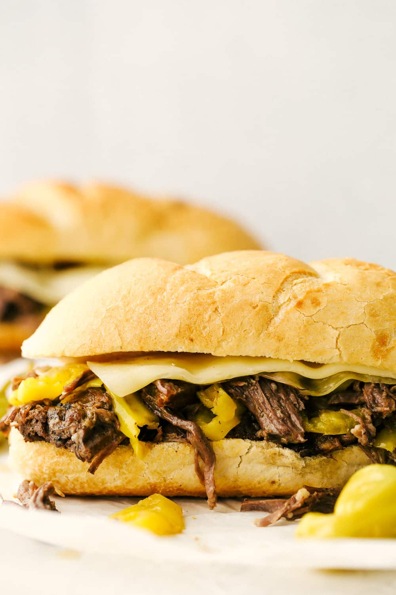

Italian Beef Recipe

Slow cooked beef simmered in Italian spices and served on a crispy french roll
Incredients
- 3-4 pounds beef chuck roast
- salt and pepper
- 2 tablespoons canola oil
- 2 cups beef broth
- 1 package dry Italian salad dressing
- 1 teaspoon garlic powder
- 1 Tablespoon italian seasoning
- 12 oz jar sliced peeroncini drained
- 1/4 cup butter sliced
- 4 hoagie rolls
- 8 slices provolone cheese (optional)
Steps
- Salt and pepper the beef roast. Heat a large skillet over high heat with the canola oil. Add the roast and sear each side for 2-3 minutes until it forms a golden seared crust. Place the roast in a 5 quart slow cooker.
- Add the beef broth, italian seasoning, garlic powder, italian seasoning and pepperoncini to the slow cooker. Top roast with butter slices.
- Cook on low for 8-10 hours or high for 5-6 hours. Shred the roast with a fork. Serve on hoagies topped with provolone cheese and additional pepperoncinis if desired.